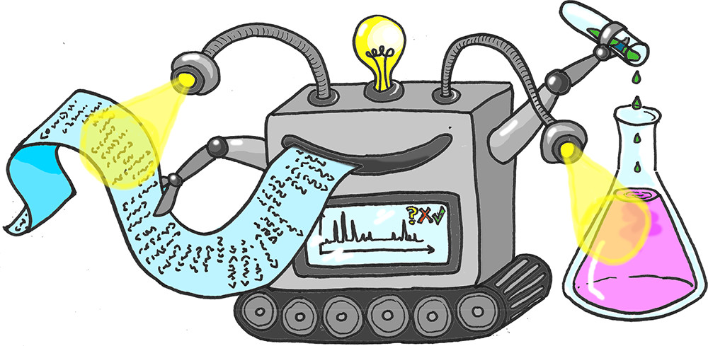

About Me

Source: ACS Cent. Sci. 2018, 4, 7, 793–804.
Education:
- Undergrad (2011-2015): I majored in Chemistry and Biology at the Massachussetts Institute
of Technology (MIT) where I participated in the UROP program primarily from Prof. Jeremiah
Jonhson's Lab. I worked mostly on the synthesis of building blocks for drug-carrying
polymers designed primarily for drug-delivery applications. The main skills I gained were
small molecule syntehsis, polymer synthesis and polymer analysis.
- Graduate I (2016-2019): This refers to part 1 of my PhD which I did at Stanford Univeristy
in Prof. Chaitan Khosla's Lab. I spent 3 years
in this lab focused on 3 projects centered around DEBS, the canonical polyketide synthase: (1) I
studied the conformational changes of a DEBS module using FRET hoping to identify distinct catalytic
states, (2) I studied the structure of hybrid DEBS module constructs to pin down interactions between
module proteins, and (3) I studied small molecule activators of DEBS turnover. The main skills I gained were
protein biochemistry (from cloning to protein expression to activity assay), FRET, protein cystrallography adding
protein structure analysis.
- Graduate II (2019-2022): This refers to part 2 of my PhD which was still at Stanford University but
in Prof. Michael Snyder's Lab. I spent 3 years generating and
analyzing multi-omic data for patients that had undergone a living-donor liver transplant and developed a rare post-operative
condition called Segmental Graft Dysfunction. I used mass spectrometry profiled sick and healthy patient sera and generated proteomic,
lipidomic and metabolomic data which was all complemented with demographic and clinical information. The main skills I gaiend were mass spectrometry
data generation and analysis (from sample prep to batch correction to differential expression), multi-omic data integration, linear model based differential
abundance, pathway analysis, and mortality prediction.
- Graduate III (2012-Pesent):
Research Interests:
Research

Project I Title
Project description, including further links to posters, talks, publications.
Project II Title
Project description, including further links to posters, talks, publications.
Contact
Email: erazokp@gmail.com
Address: Bay Area, CA